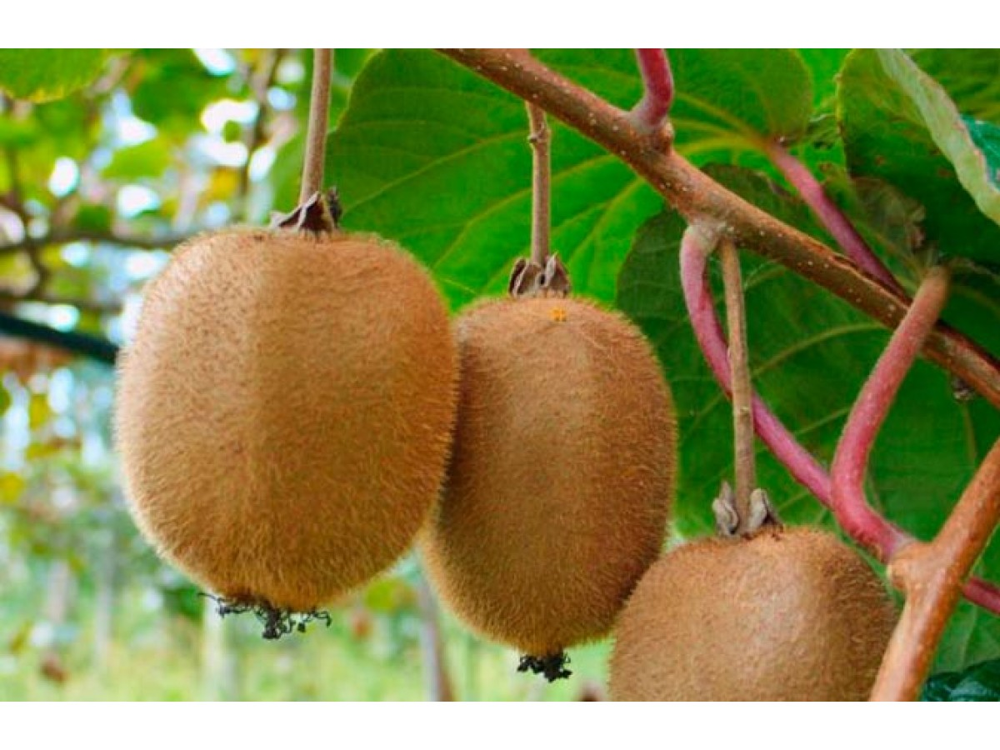
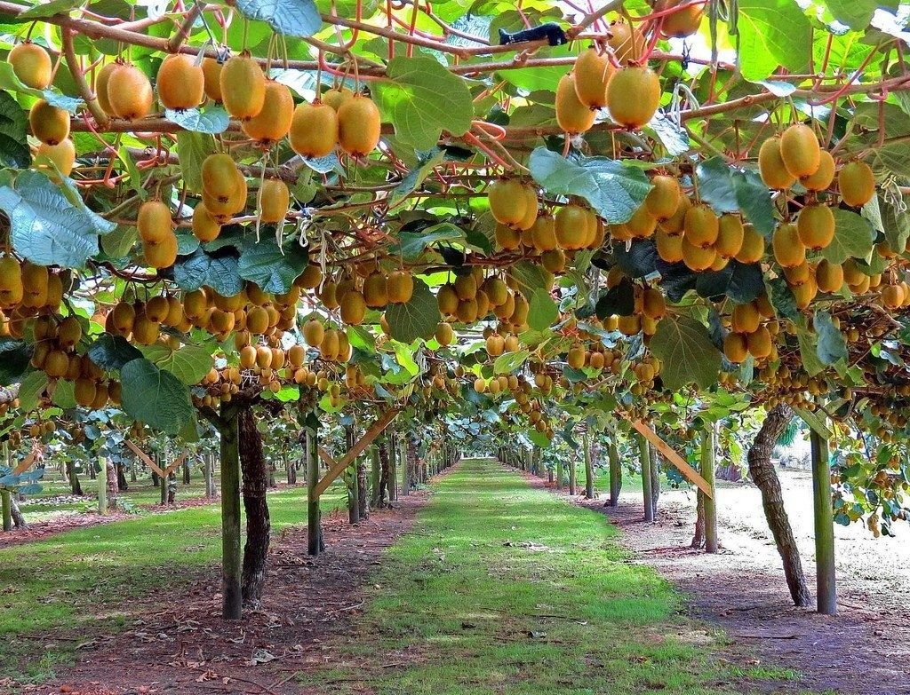
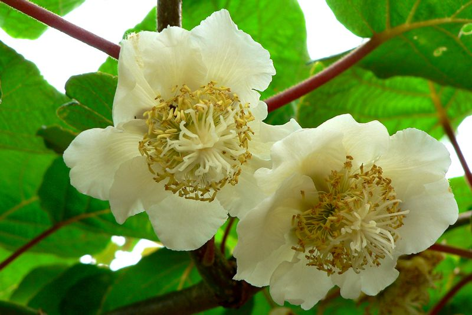

| Главная | Как вырастить лимон | Как вырастить киви | Как вырастить хурму | Как вырастить авокадо | Как вырастить манго |
Для заготовки семян берут хорошо созревший плод, разрезают пополам. Затем:
• мякоть плода разминают вилкой;
• выбирают семена и с остатками кашицы завязывают в марлю, несколько раз промывают водой;
• семена раскладывают на салфетке и подсушивают при комнатной температуре.

Подсушенные семена необходимо сначала прорастить. Для этого их выкладывают на блюдце на смоченном горячей водой ватном диске. Воды много наливать не нужно, только периодически добавлять для увлажнения дисков. Блюдечко укрывают пленкой и помещают в теплое помещение. На ночь раскрывают, а утром снова укутывают. Примерно через 1-2 недели появляются первые росточки. Растение готово к высадке.
Киви необходима почва со слабой кислотностью. Можно приготовить его самому - взять перегной, песок, листовую и дерновую землю, торф в равных количествах. Либо приобрести в магазине грунт для цветущих лиан.
Внимание! Подготовленный домашний грунт следует термически обработать кипятком или в духовке.
Грунт засыпают в контейнер или небольшие стаканчики, выкладывают семена, слегка присыпают землей, увлажняют, накрывают стеклом или укутывают пленкой. Можно использовать специальные мини-теплички, купить их в магазине. Подойдут и коробки от торта.
Контейнера помещают в теплое место с хорошей освещенностью. Скопившийся конденсат постоянно стряхивают, следят за влажностью почвы.
По прошествии 4-6 дней появляются первые росточки.

Контейнера чаще раскрывают. Постепенно растения привыкают к окружающим условиям. Затем укрытие снимают совсем. В дальнейшем уход заключается в следующем:
Для полива используют отстоянную воду комнатной температуры. Вода в поддонах не должна застаиваться.
Предохраняют от воздействия прямых солнечных лучей. Если необходимо, перемещают на другое место.
Подкормку проводят через 7 дней после появления всходов комплексными минеральными удобрениями.
Когда растения киви достигают 8-10 см в высоту, проводят пикировку в отдельные емкости. В грунте содержание торфа уменьшают. Каждому растению необходим отдельный горшок.
Горшки с растением располагают на южных окнах. Лучшее место для размещения лианы - утепленная лоджия или веранда. Растению требуется опора, по которой оно в будущем начнет плестись. Киви растет подобно винограду.

Хорошо использовать разбрызгиватель для полива, следить, чтобы грунт не пересыхал.
Необходимы подкормки органическими соединениями - 1 раз в год, в летнее время - минеральными один раз в 7-10 дней.
Растению необходим длинный световой день. Достигают этого, используя люминесцентные лампы.
Для стимуляции роста боковых ветвей периодически приписывают верхушку лианы.
Если киви располагается на веранде, то зимой следует позаботиться об утеплении. Подвязанные побеги снимают и укутывают.
По возможности киви отделяют от других комнатных растений, чтобы защитить его от появления вредителей. Растения очень любят кошки. Они могут повредить центральный ствол лианы.
Необходимо чаще осматривать листочки и веточки для своевременного выявления грибковых и других заболеваний.
Чтобы получить плоды, растение опыляют. Мужские цветки собраны в соцветия. Они меньшего размера, а тычинок больше. Женские цветки располагаются по одному, по центру у них видно завязь.